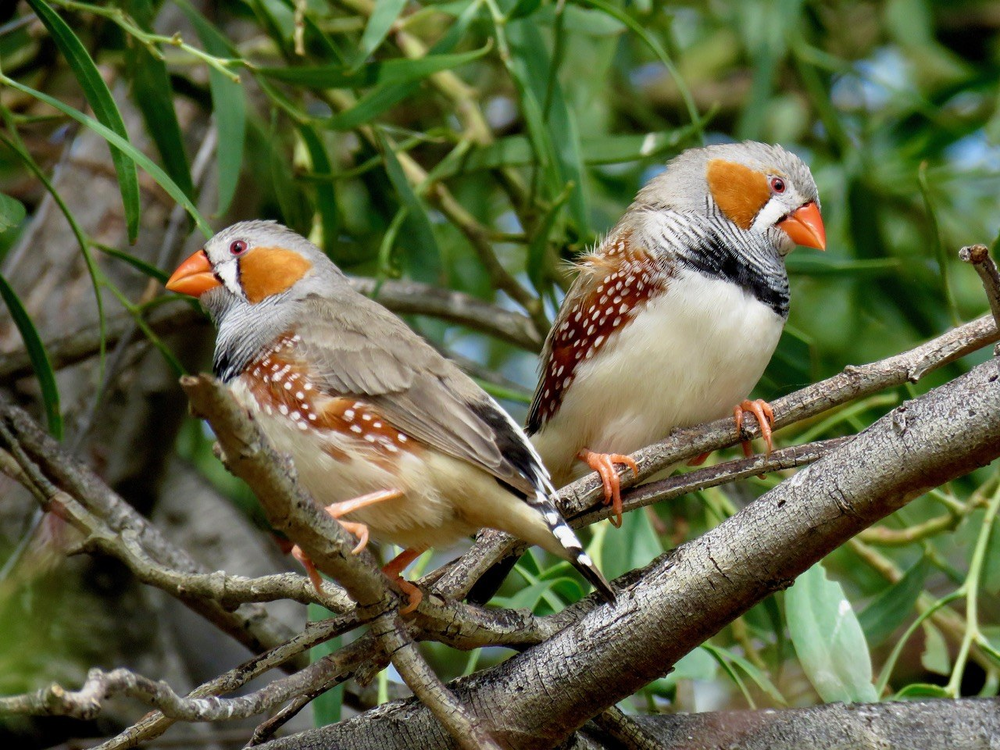
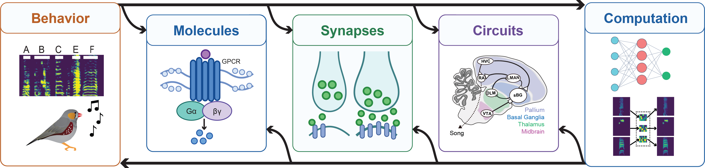

Research vision
Learning by imitation is the foundation of culturally transmitted motor behaviors such as speech and music, yet the brain mechanisms that convert fleeting experience into lasting motor skill remain largely unknown. Most studies of motor learning focus on simple, externally reinforced behaviors, which cannot fully capture the multidimensional, internally-assessed motor skills that characterize our most human behaviors. My research addresses this gap using zebra finch song learning — a rare animal model of learned vocal behavior that is culturally transmitted, internally guided, and supported by specialized cortico-basal ganglia circuitry.
The promise of birdsong has long been limited by two barriers: quantifying learning in high-dimensional vocal behavior and gaining precise access to the circuits that drive it. By combining machine-learning analyses of millions of vocalizations with circuit-specific perturbation and imaging in the singing bird, I overcame these barriers to identify a synaptic locus and circuit logic of song learning.
This synaptic locus provides a precise, experimentally tractable site where molecular signaling, synaptic plasticity, circuit dynamics, and motor change converge to drive imitation. My lab will pursue three linked questions:
1. How are transient patterns of synaptic activity converted into motor change?
2. How are those changes stabilized into skills that persist for a lifetime?
3. How do the biological constraints of the cortico-basal ganglia circuit shape what can be learned, and how fast?
Together, these questions define a research program that moves from the first moment of plasticity at a synapse to the computational logic of a learning system, with long-term relevance for understanding learned vocal behavior in health, aging, and disease.

News
Featured
May 2026 — A synaptic locus of song learning published in Nature.
Sept. 2026 — Emerging Scientist Seminar, Max Planck Institute for Biological Intelligence
June 2026 — Neural Mechanisms of Acoustic Communication Gordon Conference
April 2026 — Invited Postdoc Seminar, Mount Sinai Neuroscience
March 2026 — Invited Postdoc Seminar, Vanderbilt Pharmacology